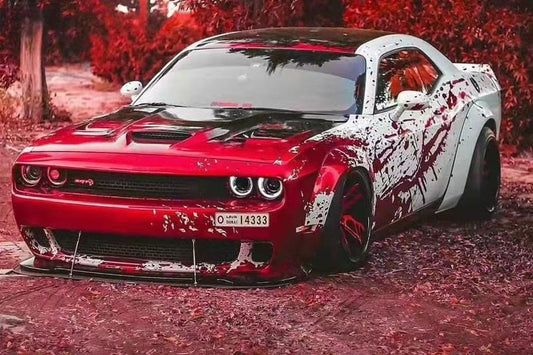

Kim jesteśmy? Poznaj ekipę Tuning Cars Radom
Tuning Cars nie powstało z chłodnej kalkulacji biznesowej czy tabeli w Excelu. Powstaliśmy z czystej, bezkompromisowej miłości do ryczących silników, zapachu palonej gumy i japońskiej inżynierii. Jesteśmy grupą przyjaciół i totalnych pasjonatów motoryzacji, którzy każdą wolną chwilę spędzają w garażu, przesuwając granice tego, co fabryka uznała za "wystarczające".
Dla nas samochód to coś więcej niż środek transportu z punktu A do punktu B. To płótno, na którym wyrażamy własny styl i charakter. Wiemy, ile emocji kryje się w idealnie zestrojonym chiptuningu, jak brzmi rasowy, przelotowy wydech i jak niesamowitą precyzję daje sportowe zawieszenie. Tą pasją chcemy dzielić się z Tobą każdego dnia.
Nasza misja – Przenieść wirtualne marzenia na radomskie ulice
Pamiętasz czasy, gdy godzinami modyfikowałeś japońskie legendy w grach takich jak Need for Speed, albo z wypiekami na twarzy oglądałeś kultowe auta w filmach? My też pamiętamy. I postanowiliśmy zamienić te dziecięce marzenia w rzeczywistość. Naszym celem jest dać każdemu fany motoryzacji możliwość poczucia tych samych, surowych emocji na żywo.
Budujemy projekty unikalne, głośne i szybkie. Sprowadzamy ikony motoryzacji, głównie z rynku japońskiego, i dopracowujemy je tak, aby dawały maksymalną frajdę z jazdy. Dbamy o każdy detal – od precyzyjnego strojenia mechanicznego, przez zaawansowaną elektronikę, aż po bezbłędny wygląd, obok którego nikt nie przejdzie obojętnie.
Wpadnij do nas na 25 Czerwca 25 w Radomiu!
Nie jesteśmy niedostępną firmą z internetu. Nasz salon i baza operacyjna mieszczą się w samym sercu Radomia, przy ulicy 25 Czerwca 25. To miejsce stworzone dla takich ludzi jak Ty.
Możesz do nas wpaść w dowolny dzień, przybić piątkę z ekipą, wypić dobrą kawę i pogadać o najnowszych trendach w tuningu czy projektach, nad którymi aktualnie pracujemy. Chętnie opowiemy Ci historię każdego auta w naszym garażu i pokażemy, co kryje się pod ich maskami. A jeśli będziesz gotowy na prawdziwą bliskość z motoryzacją – dobierzemy dla Ciebie idealną maszynę i trasę na niezapomnianą przejażdżkę.

Tuning Cars to nie tylko samochody. To styl życia, społeczność i czysta adrenalina. Do zobaczenia w Radomiu!